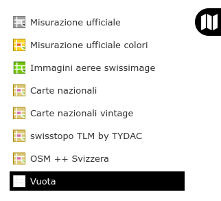
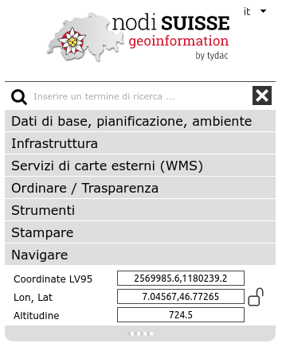
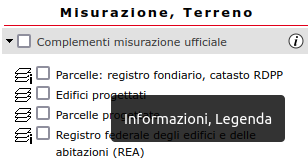
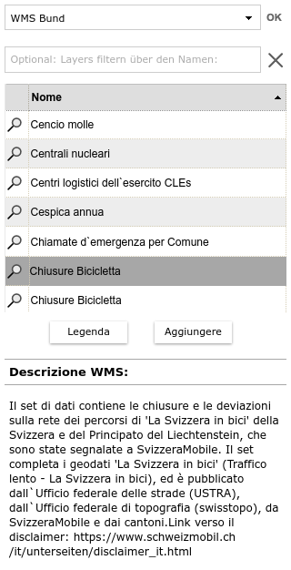
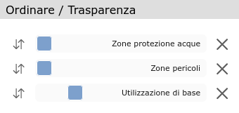
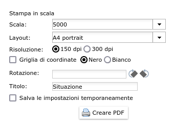
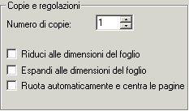
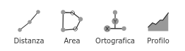
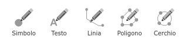

MAP+ Aiuto
Contenuto
Mappe e funzioni
Strumenti
Navigazione
Per navigare sulla mappa hai le seguenti opzioni:

- Ruotare la carta: Shift/Alt clicca e trascina. Tornare su nord: utilizzare la funzione "freccia" (questa é solo visibile se si ha ruotato la carta)
- Ingrandire, rimpicciolire: rotellina del mouse o le funzioni +/- o i +/- della tastiera
- Spostare: fare clic e trascinare o le freccine sulla tastiera
- Finestra: tieni premuto il tasto Shift, clicca e trascina
- Locallizzazione tramite GPS
- Vista iniziale: fare clic sull'icona "Vista totale" (Home)
- Mostra la mappa a schermo intero
Ricerca
La ricerca integra CAP, località, strade, indirizzi delle città più grandi, nomi topografici e quasi tutti i punti
di interesse.
Ricerca per oggetti
Digita parti del o il testo completo che stai cercando. Opzionalmente combinato con altre parti di testo.
Esempi di tecniche di ricerca rapide ed efficienti:
- Indirizzo, Optingenstrasse 27, Bern: Digita "opt 27"
- Indirizzo, Bahnhofstrasse 13 , Stettlen: Digita "bahn 13 st"
- Hotel Palace Montreux: Digita "pala montr"
- Capanna di montagna Saoseo: Digita "saos"
Puoi anche cercare temi delle mappe:
- Pper esempio "pubs"
- o il tema Paragliding, digita "paragl"
Visualizzazione e ricerca coordinate
 Se il lucchetto è aperto le coordinate
vengono visualizzate in modo dinamico quando si sposta il mouse sulla mappa.
Se il lucchetto è aperto le coordinate
vengono visualizzate in modo dinamico quando si sposta il mouse sulla mappa.
 Se il lucchetto è chiuso le coordinate vengono aggiornate solo quando si fa clic sulla mappa. Ciò ti consentirà di copiare / incollare le coordinate di una posizione specifica.
Se il lucchetto è chiuso le coordinate vengono aggiornate solo quando si fa clic sulla mappa. Ciò ti consentirà di copiare / incollare le coordinate di una posizione specifica.
Se si desidera cercare per coordinate, inserire la coppia desiderata separata da una virgola o da uno spazio e premere il tasto "Enter".
Altitudine: visualizzate vengono l'altitudine senza vegetazione e costruzioni (swisstopo swissALTI3D), l'altitudine con vegetazione e costruzioni (swisstopo swissSURFACE3D) e la differenza.
Mappe di sfondo e funzioni

Come sfondo puoi scegliere (dipende dall'applicazione):
- Misurazione ufficiale
- Misurazione ufficiale colori
- Immagini aeree swisstopo swissimage
- Carte nazionali swisstopo
- Carte nazionali vintage swisstopo
- swisstopo TLM by TYDAC
- OSM++ Svizzera>, arricchita con dati topografici dei cantoni (dove disponibili gratuitamente), mappe molto
più
dettagliate con un livello di zoom più elevato
- Vuota: senza sfondo
Funzioni supplemantari:

- Scelta di mappe preparate (carte tematiche)
- Rimuovere tutti i temi
- Google StreetView:
- Naviga in StreetView. la mappa verrà aggiornata (Posizione e direzione).
- In alternativa, puoi spostare l'oggetto StreetView sulla mappa. Viene cercata e mostrata la registrazione
StreetView più vicina.
- Per avere più spazio per la mappa e Street View, puoi rimuovere il controllo di selezione delle mappe (fai
clic sui tre punti a sinistra della mappa).
- 3D: Visualizzare la zona in 3D
Temi e carte

Dati di base, pianificazione, ambiente. Sono disponibili carte per le seguenti tematiche:
- Misurazion ufficiale, terreno
- Pianificazione, Immagini aeree
- Ambiente
Infrastruttura. Sono disponibili carte per le seguenti tematiche:
- Trasporto, Energia
- Strutture, Servizi
- Cultura, Turismo, Natura, Svago
Interrogazione sull'oggetto
La maggior parte dei temi possono essere interrogati. Basta fare clic sull'oggetto desiderato.
Esempio:

Legenda
Sono disponibili legende e descrizioni per la maggior parte delle carte. Cliccare sul nome della mappa.

Aggiungere servizi carte esterni
In MAP + puoi aggiungere servizi mappe web, cosidetti Web Mapping Services (WMS). Un servizio mappe web (WMS) è un protocollo standard
per servire immagini di mappe georeferenziate su Internet. Per aggiungere uno o più livelli WMS, procedere come
segue:
- Scegliere CARTE ESTERNE (in basso a sinistra)
- Viene visualizzata la seguente finestra di dialogo:

- WMS: Scegli un servizio dell'elenco integrato o digita una connessione manualmente e fai clic su
connetti. Viene visualizzato un elenco dei WMS che può essere filtrato su bisogno
Una volta scelto un livello hai le seguenti opzioni:
- Leggi la descrizione del WMS (se disponibile). Importante: Certi WMS dispongono di una limitazione dello zoom,
voul dire non visibili a certi livelli
- Clicca su un WMS per mostrarlo sulla mappa (fai attenzione alle possibili restrizioni di zoom, vedi sopra)
- Legenda: Mostra la legenda se disponibile (in caso contrario, il pulsante è disattivato).
- Aggiungere: Aggiungi il WMS alla mappa.
- Alcuni livelli potrebbero non essere trasparenti. Per gestire la trasparenza di un livello, fare clic su
ORDINARE / TRASPARENZA
- Per rimuovere un WMS, sono disponibili le seguenti opzioni: fare clic sulla funzione Nascondi layers i o
utilizzare il menu ORDINARE / TRASPARENZA
Ordinare / Trasparenza
Le carte selezionate possono essere ordinate tramite questa funziononalità (trascinare i simboli frecce). In più, la trasparenza di ogni carta può essere cambiata.
Esempio:

Strumenti
Gli strumenti si trovano nella barra multifunzione in alto:
- Stampa PDF
- Misurare, profili e disegnare sotto "STRUMENTI"
Stampa
 Stampa PDF in scala
Stampa PDF in scala
Viene visualizzata la seguente finestra di dialogo. Scegli scala, layout, risoluzione e, facoltativamente,
inserisci un titolo per la tua mappa:

IMPORTANTE: Per poter stampare in scala devi disattivare qualsiasi
ridimensionamento offerto dal tuo software PDF (come adattamento o riduzione del formato carta). Esempio:

 Esporto PDF/PNG
Esporto PDF/PNG
La sezione di mappa può essere esportata in formato PDF (senza bordo o layout, non in scala) o in formato PNG. Nel caso del PDF, è possibile selezionare la taglia e la risoluzione della carta. Nel caso del PNG, la dimensione in pixel.
Misurare

 Distanza
Distanza
Cliccare sul punto iniziale desiderato e continuare a fare clic su un numero qualsiasi di punti intermedi. Per terminare fare doppio clic. Dopo aver terminato, puoi ancora aggiungere e spostare punti. Per terminare la funzione, fai di nuovo clic sull'icona, scegli un'altra funzione o passa a mappe o cerca.
 Misura ortogonale
Misura ortogonale
Misurazione ortogonale esatta, procedere come segue:
- Cambiare le proprietà se lo si desidera (stile del tratto, carattere e loro dimensioni)
- Digitalizzare prima le ascisse (base), ad esempio un confine di parcella (due punti di confine)
- Poi un numero arbitrario di punti di ordinata: ad esempio bordi di casa ecc.
- Per concludere: doppio clic sull'ultimo punto dell'ordinata
- Per uscire dalla funzione, selezionare nuovamente la funzione o chiudere la finestra di dialogo
Istruzioni animate ...

 Area
Area
Cliccare sul punto iniziale desiderato e continuare a fare clic su un numero qualsiasi di punti intermedi. Per terminare fare doppio clic. Dopo aver terminato, puoi ancora aggiungere e spostare punti. Per terminare la funzione, fai di nuovo clic sull'icona, scegli un'altra funzione o passa a mappe o cerca.
 Sposta / Modifica
Sposta / Modifica
Gli oggetti catturati (linee, superfici) possono essere modificati e / o spostati successivamente. Per farlo, procedere come segue:
- Assicurarsi che nessuna funzione di misura sia attiva
- Fare clic sull' oggetto desiderato
- Per spostare l' oggetto, fai clic sull' immagine blu dello spostamento e trascina l' oggetto. Se le linee sono rette, fai clic su una delle frecce che non si trovano sulla linea e non al centro.
- Per aggiungere punti all'oggetto, clicca sulla linea nelle posizioni desiderate e trascina
- Per eliminare punti intermediari dell'oggetto, clicca sul punto desiderato e performa Alt/Click
- Per eliminare l'oggetto intero, seleziona l'oggetto e clicca sul tasto Delete
Istruzioni animate ...

Profilo
 Misura della distanza con generazione del profilo
Misura della distanza con generazione del profilo
Fare clic sul punto iniziale desiderato e continuare a fare clic su un numero qualsiasi di punti intermedi.
Per terminare fare doppio clic. Un profilo viene generato e visualizzato in una finestra - ora puoi:
- Spostare il mouse sul profilo. La posizione è mostrata sulla mappa
- Fare clic sul profilo per ingrandirlo, ad esempio a fini di stampa
Puoi aggiungere e spostare punti della polilinea della distanza, il profilo viene aggiornato (vedi sopra). Per terminare la
funzione, fai di nuovo clic sull'icona, scegli un'altra funzione o passa a mappe o cerca.
 Cancella: Fai clic su "cancella" per cancellare tutte le linee di dimensione. Per cancellare singoli elementi di dimensione, fai clic sull'elemento desiderato. Apparirà la finestra di dimensione: Elimina = icona del cestino.
Cancella: Fai clic su "cancella" per cancellare tutte le linee di dimensione. Per cancellare singoli elementi di dimensione, fai clic sull'elemento desiderato. Apparirà la finestra di dimensione: Elimina = icona del cestino.
 Salva come segnalibro: Il disegno può essere facoltativamente salvato come segnalibro. Se si salva un disegno, è presente un tag aggiunto all'URL. È possibile salvare l'URL come segnalibro o copiare l'URL e, ad esempio, inviandola a qualcuno. Oltre al disegno, tutti i parametri della la mappa vengono salvati (puoi tornare esattamente dove eri).
Salva come segnalibro: Il disegno può essere facoltativamente salvato come segnalibro. Se si salva un disegno, è presente un tag aggiunto all'URL. È possibile salvare l'URL come segnalibro o copiare l'URL e, ad esempio, inviandola a qualcuno. Oltre al disegno, tutti i parametri della la mappa vengono salvati (puoi tornare esattamente dove eri).
Disegni

 Simboli
Simboli
Cliccare sulla funzione per attivarla. Verrà mostrata una scelta di simboli. Scegli qualsiasi simbolo e inizia a
disegnare. Ripeti a volontà. Per terminare fare clic sul pulsante chiudi o su qualsiasi altra funzione. I simboli
possono essere modificati e spostati dopo aver terminato. Per fare ciò, basta cliccare sul simbolo, dopodiché si
può spostarlo o anche scegliere un altro simbolo.
 Testi
Testi
Cliccare sulla funzione per attivarla. Verrà visualizzata la finestra di dialogo di testo. Scegli carattere,
dimensione colore e inserisci un testo; fai clic sulla mappa per posizionarlo. Ripeti come preferisci. Per
terminare fare clic sul pulsante Chiudi o su qualsiasi altra funzione. Gli oggetti di testo possono essere editati
e spostati in qualsiasi momento dopo aver terminato. Per fare ciò, basta fare clic sul punto di vertice del testo
e trascinarlo se si desidera spostarlo e / o modificare o inserire un altro testo, modificare le proprietà, ecc.
 Linee
Linee
Cliccare sulla funzione per attivarla. Verrà visualizzata la finestra di dialogo degli stili di linea. Scegli
tipo, larghezza e colore; fai clic su un numero qualsiasi di punti nella mappa; per finire fare doppio clic.
Ripeti come preferisci. Per terminare fare clic sul pulsante Chiudi o su qualsiasi altra funzione. Gli oggetti
linea possono essere modificati e spostati in qualsiasi momento dopo aver terminato. Per fare ciò, basta cliccare
sulla linea, quindi aggiungere vertici, cambiare vertici e / o proprietà.

 Poligoni e cerchi
Poligoni e cerchi
Cliccare sulla funzione per attivarla. Verrà visualizzata la finestra di dialogo degli stili di area. Scegli tipo,
larghezza del bordo e colori; fai clic su un numero qualsiasi di punti nella mappa; per finire fare doppio clic.
Ripeti come preferisci. Per terminare fare clic sul pulsante chiudi o su qualsiasi altra funzione. Gli oggetti
area possono essere modificati e spostati in qualsiasi momento dopo aver terminato. Per fare ciò, basta cliccare
sull' area, quindi aggiungere vertici, cambiare vertici e / o proprietà.
Cancella: Fai clic su "cancella" per cancellare tutti gli oggetti disegnati. Per cancellare singoli elementi di dimensione, fai clic sull'elemento desiderato. Apparirà la finestra di dimensione: Elimina = icona del cestino.
Salva come segnalibro: Il disegno può essere facoltativamente salvato come segnalibro. Se si salva un disegno, è presente un tag aggiunto all'URL. È possibile salvare l'URL come segnalibro o copiare l'URL e, ad esempio, inviandola a qualcuno. Oltre al disegno, tutti i parametri della la mappa vengono salvati (puoi tornare esattamente dove eri).
Sposta / Modifica
Gli oggetti catturati (linee, superfici) possono essere modificati e / o spostati successivamente. Per farlo, procedere come segue:
- Assicurarsi che nessuna funzione di misura sia attiva
- Fare clic sull' oggetto desiderato
- Per spostare l' oggetto, fai clic sull' immagine blu dello spostamento e trascina l' oggetto. Se le linee sono rette, fai clic su una delle frecce che non si trovano sulla linea e non al centro.
- Per aggiungere punti all'oggetto, clicca sulla linea nelle posizioni desiderate e trascina
- Per eliminare punti intermediari dell'oggetto, clicca sul punto desiderato e performa Alt/Click
- Per eliminare l'oggetto intero, seleziona l'oggetto e clicca sul tasto Delete
Versione mobile
La versione mobile per smartphone ha una funzionalità ridotta, come segue:
- Carte di sfondo
- Aggiungere carte
- Scegliere carte tematiche
- Localizzazione GPS
- Nascondi layers
- Vista totale
- Interrogazione Oggetti
- Ricerca